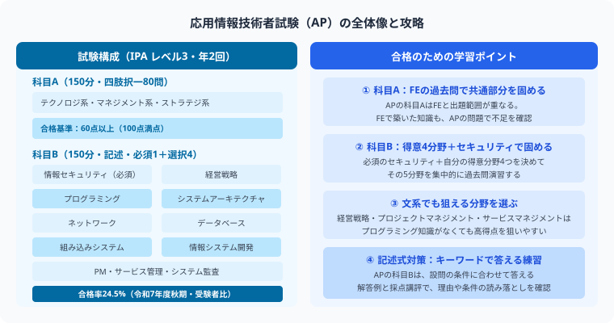
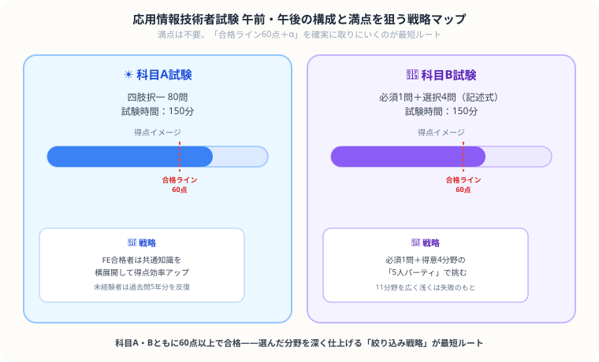

こんにちは、若葉です！
応用情報技術者試験、通称APと聞くと「科目Bの記述式が11問もあって、結局どれを選べばいいの……？」「IT用語が難しすぎて何を書けばいいか分からない……うわっ、なんじゃこりゃ！」と、選択肢の多さに立ち止まってしまう人、めちゃくちゃ多いと思います。
私自身、簿記や会計の専門用語ですら最初は「呪文か！」と面食らった経験があるので、その気持ちは痛いほど分かります。
でも実は、APは「満点を取る試験」ではなく「60点を確実に取りにいくゲーム」です。11問すべてを追いかける必要はなく、情報セキュリティを含む解答候補を絞り、5問を解答できる準備ができれば、あとはそのメンバーをひたすら鍛え上げるだけ。
今回は、そんな「選択と集中」の戦略を、私なりの視点でわかりやすくナビゲートします！
この記事で整理した内容から、次の学習で確認することを1つ選び、記録に残してみてください。
基本情報技術者（FE）に合格して次を目指す人、科目Bの11問からどれを選べばいいか迷っている人向けに、選択科目の戦略と独学スケジュールをまとめました。

応用情報技術者試験は科目Bの分野選択が合否を大きく左右します。11問から自分の得意分野を中心に、5問を解答できるよう集中的に対策することが最短合格への鍵です。
| 項目 | 内容 |
|---|---|
| 試験区分 | IPA（情報処理推進機構）主催・国家試験 |
| 試験日程 | 2026年度はCBT方式で前期・後期に実施（従来の「午前・午後」は科目A・科目Bに名称変更） |
| 科目A試験（旧称：午前試験） | 四肢択一80問・150分（60点以上合格） |
| 科目B試験（旧称：午後試験） | 11問中5問解答・記述式・150分（60点以上合格） |
| 合格率 | 24.5%（令和7年度秋期） |
| 難易度 | スキルレベル3（FEはレベル2） |
| 受験資格 | なし（誰でも受験可能） |
出典：IPA「試験要綱Ver.5.6」紙面13・15・17・45、令和7年度秋期AP合格発表（2026年10月31日確認）。
上記のAP合格率は、受験者44,005人に対して合格者10,792人の割合です。受験者層と実施時期が異なる試験の率を、個人の合格確率として比較しないでください。

| 比較項目 | 基本情報技術者（FE） | 応用情報技術者（AP） |
|---|---|---|
| 科目A試験 | 四肢択一60問 | 四肢択一80問（範囲が広い） |
| 科目B試験 | 多肢選択式・20問・100分（情報セキュリティ4問を含む） | 11問中5問を解答・150分 |
| 最大の壁 | 科目Bのプログラミング | 科目Bの記述式回答の表現力 |
| FE合格者の追加学習時間 | — | 200〜300時間 |
| 未経験者の学習時間 | 150〜200時間 | 400〜600時間 |
| 社会的評価 | IT基礎スキルの証明 | 中堅〜上級エンジニアの証明 |
この比較表の学習時間は編集部が仮置きした計画例で、調査に基づく標準必要時間ではありません。経験だけで所要時間は決まらないため、公開問題を解いた結果から見直してください。
科目Bは問1（情報セキュリティ）が必須で、問2〜11から4問を選び、計5問を解答します。情報セキュリティを含む出題範囲から、得意分野を中心に選択科目を決めることで、限られた学習時間を有効に使えます。
| 問番号 | 分野 | 難易度 | 特徴 |
|---|---|---|---|
| 問1 | 情報セキュリティ | ★★★☆☆ | 必須解答。出題内容は年度ごとに確認 |
| 問番号 | 分野 | 難易度 | おすすめ理由 |
|---|---|---|---|
| 問11 | システム監査 | ★★☆☆☆ | 監査の基礎知識と状況の読み取りを練習 |
| 問10 | サービスマネジメント | ★★☆☆☆ | ITILの知識。比較的取り組みやすい |
| 問9 | プロジェクトマネジメント | ★★★☆☆ | EVM計算など数式あり。慣れると安定 |
| 問7 | 組み込みシステム開発 | ★★★☆☆ | 要求仕様やリアルタイム処理などの理解が必要 |
| 問番号 | 分野 | 難易度 | おすすめ理由 |
|---|---|---|---|
| 問6 | データベース | ★★★☆☆ | SQL中心。実務経験者は取りやすい |
| 問5 | ネットワーク | ★★★★☆ | 難しいが範囲が安定している |
| 問2 | 経営戦略 | ★★★☆☆ | 文章読解力が高い人向け |
| 問8 | 情報システム開発 | ★★★☆☆ | 開発経験があれば取り組みやすい |
出典：IPA「令和7年度秋期AP午後・採点講評」（2026年10月31日確認）。
表の問番号は令和7年度秋期の対応で、難易度の星や推奨分野は編集部の見立てです。受験回の問題の指示で必須・選択の別を確認してください。
以下は学習枠を割り振る自作例です。6ヶ月での合格を保証するものではありません。
| 期間 | 学習内容 | 目安時間/週 |
|---|---|---|
| 1〜2ヶ月目 | 科目A：参考書1周・過去問年度別で確認 | 8〜12時間 |
| 3ヶ月目 | 科目A：過去問5年分を繰り返し 科目B：解答候補を決める | 12〜15時間 |
| 4ヶ月目 | 科目B：解答候補5問の過去問3年分を解く | 15〜18時間 |
| 5ヶ月目 | 科目B：模擬試験形式で時間内に5問解く練習 | 18〜20時間 |
| 直前1ヶ月 | 科目A・科目Bを交互に総仕上げ。弱点分野を集中強化 | 20〜25時間 |
出典：IPA「応用情報の申込み・実施期間」（2026年10月31日確認）。
2026年度のCBT日程：前期は申込みが2026年11月7日17時まで、科目Aが10月28日〜11月10日、科目Bが11月24日〜12月6日です。後期は申込みが2027年1月27日〜2月16日、科目Aが2月6日〜19日、科目Bが3月3日〜15日です。科目A・Bは別日に実施し、それぞれの期間内の空席から予約します。後期申込時刻などの詳細は公式発表を確認してください。
| 活用場面 | 効果 |
|---|---|
| 就職・転職活動 | 求人の歓迎条件や会社の資格手当制度を個別に確認する |
| フリーランスITエンジニア | 学習した知識と実務実績を整理する。資格だけで単価上昇を保証しない |
| システム監査・ITコンサル | 求人が求める業務経験と資格条件を照合する |
| 公務員（情報系） | 採用区分ごとの受験案内・評価条件を確認する |
| 上位資格への足がかり | 高度試験・情報処理安全確保支援士試験などの学習候補を検討する。SGはレベル2の別区分 |
この記事が少しでも参考になったら……
この記事で整理した内容から、次の学習で確認することを1つ選び、記録に残してみてください。